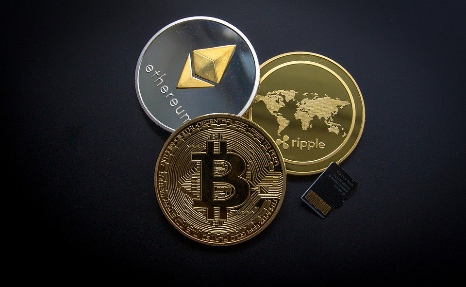

Cyber Blockchain and Cryptocurrencies
What does it do?
Cryptocurrency is a digital asset that is exchanged through secure financial transactions online, essentially, it’s a form of online money that is used for payments instead of regular cash, whether it is to maintain buyer anonymity, or add an extra level of security to transactions. Cryptocurrency is growing in popularity and will continue to increase in popularity as online transactions become the preferred method of payment amongst internet users. Many major cryptocurrencies (such as Bitcoin, created in 2009 by Satoshi Nakamoto), use peer-to-peer networks, and do not include a server or central authority; this prevents individuals from accidentally spending the same amount twice, otherwise known as “double-spending”, something which most regular payment networks struggle to monitor and prevent. Each peer within the Cryptocurrency database holds a record of all their transactions, and transactions do not process until confirmed (with the user’s private key), once confirmed, the payment cannot be reversed or cancelled.
Cryptocurrency is still a new technology, initially being released in 2009. Whilst many attempts to create such an online currency were made in the 90s, the first successful cryptocurrency was in fact, Bitcoin. Since then, many types of cryptocurrencies have been created, eg: Ethereum, XRP, EOS, Litecoin, Stellar, etc. There is approximately 1600 cryptocurrencies available (as of 19th August, 2018), however a new cryptocurrency can be created at any time.
Blockchain on the other hand, is the record of data that is time-stamped, with each “block” of data being linked to the previous via cryptographic principles. This data record is managed by a multitude of computers and is not owned by a single entity. In simplest terms, Blockchain is the record of transactions that are made using cryptocurrencies. Blockchain and cryptocurrencies allow money transfers to cost less and take less time to process. For example, according to BraveNewCoin.com, a “$99 million Litecoin (LTC) transaction took only two and a half minutes to process and cost the sender only $0.40 in transaction fees”. Whereas, if this transaction took place through a regular bank network, the transfer fees would have been incredibly high, and the transfer would have taken several days or over a week to be completed.
Some cryptocurrencies such as Monero (XMR), are also created with privacy being the central point of focus. These cryptocurrencies enable users to make anonymous transactions, which can both be a positive and negative feature. A positive note is that such cryptocurrencies prevent transfer delays, through allowing the user to not give reasoning or the source of their payment, which can prolong the transfer process. However, cryptocurrencies that allow the user to make anonymous purchases make it harder for authorities to track down those who make illegal purchases; with such cryptocurrencies often being used on the “dark web” for illegal purchases such as weapons, drugs, and assassination hire. Due to the explosive growth of cryptocurrency in the past few years, it is now possible to travel the world using cryptocurrency as payment, or even go to space; as the space travel company Virgin Galactic, owned by Richard Branson, accepts Bitcoin payments for travel bookings. In the next couple of years, it can be assumed that cryptocurrency will continue to grow in popularity and may even become the main form of online payment. The continuous advancement of the internet and internet-using devices (such as laptops and phones) is allowing cryptocurrency to reach more potential users and be used to purchase a much larger range of items and services compared to 5 years ago. In another 5 years, even more services and items will be available for purchase using cryptocurrencies, allowing people all around the world to access cheaper, faster, and more secure payment transfers.
What is the likely impact?
In terms of the likely impact Blockchain and cryptocurrency will have in the future, it can be suggested that cryptocurrency will become the main method for making online payments, due to its potential anonymity, cheaper transfer fees, and quicker processing time. Considering cryptocurrency prevents accidental double-spending, it is an ideal method of payment for those who want a more secure and convenient way of purchasing items online. Cryptocurrency is also a great investment due to its growing popularity, and has thousands of cryptocurrencies to invest in. Cryptocurrency is likely to replace the current method of online spending, that being through bank transfers or via credit card; because of its increased usage over the last couple of years, it is no longer considered only commonplace on the “dark web” for sketchy transactions, but on the regular internet for both common and luxury purchases. However, the most popular Cryptocurrency, Bitcoin, may lose all value, as after hitting a high in terms of value in 2017, Bitcoin’s value fell dramatically, with other cryptocurrencies such as Litecoin gaining popularity and value. As cryptocurrencies do not use a central authority to complete transfers, methods of online payment that do may become outdated and redundant, such as bank transfers. Those that will be affected by the growing popularity of cryptocurrency include online spenders, and companies that accept online payment. In order to keep up with the introduction of cryptocurrency as a common form of payment, they will have to include Bitcoin, Litecoin, etc. as a legitimate form of payment on their site; or if they are a buyer, become familiar with cryptocurrency and even use it to pay for items online.
How will this affect you?
I do not believe that this will really affect me in my daily life until Cryptocurrency becomes the main method of online payment. For online payments, I still use bank transfers and my credit card to purchase items, and so blockchain and cryptocurrency does not have much of an impact on my life at the current time. In the future however, I may use a cryptocurrency such as Bitcoin to pay for items online, once it increases in popularity and is used as a payment options on the sites I purchase from. A few of my friends have invested in multiple cryptocurrencies, and so this increase in popularity will affect them much more than me, as they may lose or make money off their investments, depending on the specific cryptocurrency they have invested in. If cryptocurrency does become the norm for online purchasing, the way I spend my money will change, and I may stop using a debit card altogether. However, apart from this, I cannot see cryptocurrency changing much else in my life apart from my spending method, as whilst it is becoming more common, I cannot see it replacing physical money and other methods of payment like credit cards in the foreseeable future.
References
Us.norton.com. (2019). What is cyber security? What you need to know. [online] Available at: https://us.norton.com/internetsecurity-malware-what-is-cybersecurity-what-you-need-to-know.html [Accessed 5 May 2019].
Services, P. (2019). What Is Cybersecurity?. [online] Cisco. Available at: https://www.cisco.com/c/en/us/products/security/what-is-cybersecurity.html [Accessed 5 May 2019].
TechBeacon. (2019). Top 5 emerging information security technologies. [online] Available at: https://techbeacon.com/security/5-emerging-security-technologies-set-level-battlefield [Accessed 5 May 2019].
Blockgeeks. (2019). What is Blockchain Technology? A Step-by-Step Guide For Beginners. [online] Available at: https://blockgeeks.com/guides/what-is-blockchain-technology/ [Accessed 5 May 2019].
Inside Out Security. (2019). 60 Must-Know Cybersecurity Statistics for 2019. [online] Available at: https://www.varonis.com/blog/cybersecurity-statistics/ [Accessed 5 May 2019].